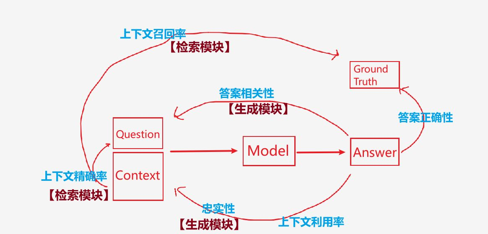

Tags: 导入Edge::2-15
大型语言模型（Large Language Models, LLMs）的主要架构类别里面，其中，Encoder-Decoder 架构的特点是什么？【同时使用什么和什么？是个什么类型的任务？】
同时使用编码器和解码器，能够处理从输入到输出的复杂转换，适用于序列到序列的任务，如机器翻译、文本摘要等。
Tags: 导入Edge::2-15
GPT 他的模型的英文全称是什么？
generative pretrained transformer。
Tags: 导入Edge::2-15
BERT 在训练时是 双向 学习的，这是什么意思？【哪里的信息参与到了学习？】
左右两边的上下文都参与学习。
Tags: 导入Edge::2-15
GPT (Generative Pretrained Transformer) 是一个 自回归（autoregressive）模型，它使用 哪个预训练方法？
Causal Language Modeling（因果语言建模）。
Tags: 导入Edge::2-15
为什么说Transformer 彻底改变了 Seq2Seq 模型的设计？【他用什么来替代了什么结构？】
因为它用自注意力机制（Self-Attention）来替代传统的 RNN/LSTM 结构。
Tags: 导入Edge::2-15
T5 是一个统一的 Transformer 模型，它将所有的 NLP 任务都视为 什么 的问题。
文本到文本。
Tags: 导入Edge::2-15
BART 是结合了 哪两个思想的一个混合模型。
BERT 和 GPT 。
Tags: 导入Edge::2-15
Seq2Seq 模型最基本的定义就是什么和什么之间的映射关系？
输入和输出序列。
Tags: 导入Edge::2-15
通常来说，Seq2Seq 模型 指的就是 什么 架构？
Encoder-Decoder。
Tags: 导入Edge::2-15
GPT 的预训练任务是 自回归语言建模任务，为什么是无监督学习？
不依赖任何人工标注的标签，通过预测下一个 token 来学习。
Tags: 导入Edge::2-15
GPT 的微调阶段阶段是有监督任务还是无监督任务。
有监督任务。
Tags: 导入Edge::2-15
GPT 的微调阶段阶段是有监督任务，关于使用的数据，两个例子。
问题-答案对、分类标签。
Tags: 导入Edge::2-15
GPT 的训练可以分为两个主要阶段：其中，无监督的预训练阶段，基于哪个任务 实现的。
基于 自回归语言建模任务 实现的。
Tags: 导入Edge::2-15
GPT 的训练里面的自回归语言建模任务的目标是什么？【根据什么来预测什么？】
根据输入序列的前面部分，预测下一个 token。
Tags: 导入Edge::2-15
GPT 的预训练任务其实是基于一种叫做 什么的方法。简单来说，它就是让模型通过怎么样的方式，学会理解什么？
自回归语言建模 ，通过预测下一个词，学会理解语言的分布和结构。
Tags: 导入Edge::2-15
为什么叫“自回归”？【自 和 回归，分别指的是什么意思？】
“自”是指模型依赖于自身的历史值。“回归”是指模型在预测连续值。
Tags: 导入Edge::2-15
自回归模型与自编码模型的区别 是什么？【分别用于什么？】
自回归模型是生成式模型，用于预测下一个值或生成完整序列。自编码模型用于特征提取和重建数据，并不用于序列预测。
Tags: 导入Edge::2-15
代码实现上看，BERT 模型在实际使用中最直接接收到的输入数据是什么？【三个数字序列。】
input_ids、attention_mask 和 token_type_ids。
Tags: 导入Edge::2-15
BERT模型的编码器的最终输入是input_ids、attention_mask 和 token_type_ids 还是 Text Embedding（Token Embedding）、Position Embedding 和 Segment Embedding？
Text Embedding（Token Embedding）、Position Embedding 和 Segment Embedding。
Tags: 导入Edge::2-15
在BERT中，BERT 的输入信息里面的 attention_mask，是否后续通过嵌入的方式加入的？【也就是是否加入到嵌入层。】
没有加入到嵌入层，因为嵌入层的话是token/position/segment embedding。
不是通过嵌入方式加入，而是直接作为注意力计算时的掩码，避免模型关注到无效的 padding 部分。
Tags: 导入Edge::2-15
在BERT中，BERT 的输入信息里面的 attention_mask，attention_mask 不是通过嵌入的方式加入的，而是直接作为注意力计算时的掩码，避免模型怎么样？
避免关注到无效的 padding 部分。
Tags: 导入Edge::2-15
BERT 模型里面编码器的输入是什么的相加？
三种嵌入Token Embedding，Position Embedding，Segment Embedding的相加。
Tags: 导入Edge::2-15
因果掩码（Causal Mask） 的主要作用是什么？【确保模型在什么时候只能基于什么而不能看到什么。】
在自回归生成过程中，确保模型在生成下一个词时只能基于当前及之前的词语，而无法“看到”未来的词。
Tags: 导入Edge::2-15
在许多文献和实现中，“因果掩码”也被称为“什么掩码”或“什么掩码”？
后续掩码或者未来掩码。
Tags: 导入Edge::2-15
NLU 是什么类型的任务？
自然语言理解（NLU）任务。
Tags: 导入Edge::2-15
NLG 是什么类型的任务？
自然语言生成（NLG）任务。
Tags: 导入Edge::2-15
Encoder-Decoder 模型的两个具体的典型模型是什么？
T5 和 BART。
Tags: 导入Edge::2-15
BART（2019）：结合 谁的 Encoder 和 谁的 Decoder？
结合 BERT 的 Encoder 和 GPT 的 Decoder。
Tags: 导入Edge::2-15
自回归模型的英文全称和简写？
Autoregressive, AR.
Tags: 导入Edge::2-15
自编码模型 和 自回归模型分别的核心功能是什么？
自编码模型（AutoEncoder, AE）：名字来源于其核心功能——对输入数据进行编码并尝试还原，即利用数据本身来进行编码和重建数据。自回归模型（Autoregressive, AR）：名字来源于其核心特性——基于自身的过去状态（或序列的前面部分）来预测未来。
Tags: 导入Edge::2-15
自编码模型（AE）的名字解释，A 和 E各自的含义？
- “Auto”：自动、无监督。自编码器通过输入数据本身进行学习，不依赖人工标签。
- “Encoder”：编码器，表示模型对输入数据进行压缩/编码和还原。
Tags: 导入Edge::2-15
自回归模型（AR）的名字解释，A 和 R各自的含义？
- “Auto”：自动、无监督。通过已有数据（输入序列的前部分）。
- “Regressive”：回归，表示通过已有数据（输入序列的前部分）对未来进行预测。
Tags: 导入Edge::2-15
AE 和 AR 分别的含义区别是什么？【分别是使用自身数据怎么样？】
AE 是一种模型，能够自动对自身数据进行编码、提取特征并通过解码还原数据。
AR 是一种模型，能够根据自身数据{过去的状态}（或前面部分的序列）自动预测未来的状态。
Tags: 导入Edge::2-15
时间序列预测就是一个典型的自回归模型还是自编码模型应用场景？
自回归模型.
Tags: 导入Edge::2-15
自回归模型的“自”指的是什么，“回归”是什么？
Tags: 导入Edge::2-15
简历里面的背景描述部分应该包括哪三个要素？
项目的必要性 - 为什么要做这个项目，
采用的解决方案 - 用什么技术手段解决问题，
项目成效 - 实施后带来了什么具体改善。
Tags: 导入Edge::2-15
简历里面的背景描述部分，大概应该多少个字？
100个字。
Tags: 导入Edge::2-15
知识图谱和RAG系统结合是否可行？ 这个方案叫什么名字以及 流程里面，使用哪两个数据库分别存储什么样的知识？两路召回的结果什么样操作以后跟什么进行拼接，最终输入到哪里？
这个方案可行，他的名字叫做"Graph-RAG"。
通过Neo4j存储结构化知识，
通过向量数据库存储非结构化知识，
双路召回结果融合后再与Prompt拼接，
最终交由大模型生成答案。
Tags: 导入Edge::2-15
对于面试前的0基础的准备，先准备简历还是先准备面试的技术知识点。
Tags: 导入Edge::2-15
在准备简历的时候应该重视哪两个部分的清晰的表达。
Tags: 导入Edge::2-15
在面试环节，要使面试官对自己参与的项目信服，其关键前提是什么？
在于表达需具备逻辑性。
Tags: 导入Edge::2-15
简历里项目背景的常见错误写法，是什么？
将整个项目实施过程直接当作项目背景，即只阐述了“怎么做”，却忽略了“为什么做”以及“做之后的成效”。
Tags: 导入Edge::2-15
GBDT 和 GBM 这两者之间的关系是什么？
GBDT（梯度提升决策树）确实是GBM（梯度提升机器）的一种特定实现方式。GBDT里面的基学习器用的是决策树。GBM对里面的基学习器没有要求。
Tags: 导入Edge::2-15
GBDT 和 GBM 他们各自的中文全称是什么？ ·
GBDT（梯度提升决策树）
GBM（梯度提升机器）
Tags: 导入Edge::2-15
GBM 梯度提升机器 的框架，他的思想是什么？ 【不断的添加什么来拟合什么。】
不断添加基学习器来拟合前一轮基学习器的残差。
通过不断地迭代添加新的弱学习器来减少模型的预测误差。
Tags: 导入Edge::2-15
GBDT 为什么会被认为是对GBM 的其中一种特定的实现？
GBDT则固定选择了决策树作为弱学习器，因此也称为决策树版的梯度提升方法。
Tags: 导入Edge::2-15
GBM本质上是一个加法模型，其思想是什么？
【将什么怎么样，最终形成什么？】
把多个基学习器的输出线性叠加起来形成最终模型。
Tags: 导入Edge::2-15
在GBM上采用决策树成为最常见的策略，就变成了什么机器学习算法？
即GBDT 梯度提升决策树 。
Tags: 导入Edge::2-15
GBDT可以看作是GBM的一种常见和有效的实现方式，其核心区别在于什么？
采用了决策树作为基学习器。
Tags: 导入Edge::2-15
XGBoost 与 GBDT 在基本思想上是一脉相承的，都是基于什么的框架，通过的不断添加什么来逐步的减少什么。
都是属于梯度提升框架，通过不断添加决策树等弱学习器来逐步减少预测误差
Tags: 导入Edge::2-15
XGBoost 与 GBDT 每一步都在拟合什么？
每一步都在拟合前一阶段的残差或梯度。
Tags: 导入Edge::2-15
XGBoost 与 GBDT 他们默认情况下弱学习器都是什么，是因为可以捕捉数据中的什么关系？
其默认的弱学习器都是决策树，利用树结构捕捉数据中的复杂非线性关系。
Tags: 导入Edge::2-15
传统的GBDT 与 XGBoost 两者之间的不同点是什么？ 【正则化】
- 通常不内置系统性的正则化策略，
- 内置 L1 和 L2 正则化，有助于控制模型复杂度、防止过拟合。
Tags: 导入Edge::2-15
传统的GBDT 与 XGBoost 两者之间的不同点是什么？ 【计算效率上面为什么前者慢，后者快？】
- 一般采用顺序迭代，训练速度较慢，
- 通过并行化、缓存优化等技术大幅提升训练速度。
Tags: 导入Edge::2-15
传统的GBDT 与 XGBoost 两者之间的不同点是什么？ 【缺失值处理】
- 部分实现需要额外预处理，缺失值处理不够自动化，
- 内部实现了缺失值处理机制，可自动学习缺失数据的最佳分裂方向。
Tags: 导入Edge::2-15
传统的GBDT 与 XGBoost 两者之间的关系是什么？
XGBoost 可以认为是在传统 GBDT 基础上的一次进化和扩展。
Tags: 导入Edge::2-15
XGBoost 通过对 传统的GBDT 进行了哪四个方面的改进，显著提升了模型的效率和准确性。
通过二阶优化、正则化、并行计算和缺失值处理等改进，显著提升了模型的效率和准确性。
Tags: 导入Edge::2-15
XGBoost 它的英文全称和中文全称分别是什么？ 以及 这个名字强调了什么？
为“极致梯度提升”（eXtreme Gradient Boosting），名称更强调其性能和效率上的“极致”优化。
Tags: 导入Edge::2-15
XGBoost 本质上使用什么作为基分类器，可以看作是哪个算法的扩展和优化版。
使用决策树作为基分类器，因此可以看作是梯度提升决策树（GBDT）的扩展或优化版.
Tags: 导入Edge::2-15
bagging和boosting 分别与决策树结合，形成了什么算法？
Tags: 导入Edge::2-15
Bagging和Boosting的核心区别在于它们的"思路理念"，具体来说是什么？
【分别是如何投票以及训练集分别什么样？基学习器是否平等？样本权重是否会发生变化？训练过程是并还是串行？】
1 平等的多数投票，民主投票的原则。通过有放回抽样形成多个训练集，每个训练集都是独立的。基学习器地位相等，并行训练
2 精英投票的思路。基学习器权重大，话语权就大。每轮训练集都是一样的，但是呢每次训练时候，错分样本的权重都会增加。串行训练的。
- Bagging采用的是"民主投票"的思路，它通过有放回抽样生成多个独立的训练集，每个基模型地位平等，最终采用投票或平均的方式得出结果。这种方法更注重降低模型的方差（variance），提高模型稳定性，Bagging可以并行训练（因为模型间独立）。
- 而Boosting采用的是"精英提升"的思路，每轮训练集不变，它通过不断提升被错分样本的权重，让模型关注那些难分的样本，同时后续的模型要基于前面模型的结果进行优化，最终集成时优秀的模型具有更大的话语权。这种方法更注重降低模型的偏差（bias），提高模型准确性，Boosting只能串行训练（因为模型间有依赖）。
Tags: 导入Edge::2-15
BM25 这个算法的英文全称以及 它是经典的什么检索算法？
（Best Match 25）一种经典的文本检索算法。
Tags: 导入Edge::2-15
BM25 这个算法它是基于什么对什么进行排名？ 他计算的是什么和什么的相关性评分？
它是基于概率检索模型，对文档进行排名。主要计算的是查询query和文档document之间的相关性评分。
Tags: 导入Edge::2-15
BM25 这个算法它是哪个算法的改进版本？
它是TF-IDF算法的改进版本。
Tags: 导入Edge::2-15
TF-IDF算法 这个名称的两个英文单词缩写分别表示什么意思？
词频（TF）、逆文档频率（IDF）。
Tags: 导入Edge::2-15
混合检索是一种将多种检索技术结合起来的技术,比如哪两种检索？
关键词检索，
语义向量检索。
Tags: 导入Edge::2-15
BM25对长短文档进行了归一化处理，这样做的好处是可以避免什么问题。 【避免了什么样的文档应包含什么而被过高评分？】
避免了长文档因包含更多关键词而被过高评分的问题。
Tags: 导入Edge::2-15
关键词检索的一种算法例子是什么？
BM25。
Tags: 导入Edge::2-15
关键词检索的一个算法案例以及关键词检索是什么含义？
关键词检索（如BM25）： 基于精确匹配，通过关键词出现频率和权重进行排名。
Tags: 导入Edge::2-15
语义向量检索是什么含义？ 【基于谁生成的什么来捕捉什么？】
语义向量检索： 基于深度学习模型生成的向量表示，捕捉文本之间更深层次的语义关系。
Tags: 导入Edge::2-15
BM25通常作为什么检索中的一个关键模块，用于处理什么？
混合检索，用于处理文本中的关键词匹配。
Tags: 导入Edge::2-15
混合检索则通过结合BM25与什么搜索等技术，实现了更全面、更精准的信息召回
向量搜索。
Tags: 导入Edge::2-15
BM25 和 混合检索，这两种方式它们的核心原理有什么区别？ 【前者是基于什么进行改进？强调了什么匹配？后者的话则是融合了什么和什么？】
- 基于TF-IDF改进，强调关键词匹配，
- 融合 文本检索和语义向量检索。
Tags: 导入Edge::2-15
BM25 和 混合检索，这两种方式它们的 适用场景 有什么区别？
- 精确关键词查询，如传统搜索引擎，
- 需要语义理解或多模态数据，如智能问答系统。
Tags: 导入Edge::2-15
RAG里面，增强模块的目的是什么？【通过调整什么来提升什么？】
通过调整或改进生成模型的输入来提升生成效果。
Tags: 导入Edge::2-15
RAG系统的工作流程里面，知识检索模块流程和步骤是什么？ 【对PDF文本怎么处理？然后使用什么来对文本进行嵌入，导入到哪里，混合检索方式是什么？】
首先，我们通过处理大量的PDF文本构建本地知识库。在这个过程中，我们需要对PDF进行结构化处理，将文本切分成合适的块（chunk），确保每个块包含足够的上下文信息。
接着，我们使用embedding模型对这些文本块进行嵌入，并将其导入到一个高效的向量数据库，如Milvus。
在检索阶段，我们采用BM25和embedding检索的混合方式，利用BM25进行初步的关键词匹配，然后使用embedding模型计算语义相似度，最终返回最相关的上下文信息。
Tags: 导入Edge::2-15
RAGAs 它通过什么化的指标，来对哪两个模块进行独立的评估？
它通过一套结构化的指标，对RAG系统的检索和生成模块进行独立和整体评估，帮助开发者优化系统性能并确保其可靠性。
Tags: 导入Edge::2-15
在RAG系统中，检索模块和生成模块分别的作用是什么？负责什么？
【检索模块是从哪里提取什么，生成模块是利用什么生成什么？】
检索模块负责从外部知识库中提取相关信息，
而生成模块利用这些信息生成最终的回答。
Tags: 导入Edge::2-15
RAGAs框架 提供端到端的评估。 是什么意思？ 【评估整个什么？包括从哪里到哪里的流程？】
综合评估整个RAG管道，包括从检索到生成的完整流程。
Tags: 导入Edge::2-15
RAGAs需要以下四类数据作为输入 分别是什么？
Question（用户查询）：用户提出的问题，作为RAG管道的输入。
Contexts（检索上下文）：从知识库中检索到的相关文本片段，用于支持回答生成。
Answer（生成答案）：基于上下文和查询生成的回答。
Ground Truth（参考答案）：问题的真实答案，仅在某些指标（如上下文召回率）计算时需要。
Tags: 导入Edge::2-15
RAGAs需要以下四类数据作为输入 ，其中question指的是什么？
Question（用户查询）：用户提出的问题，作为RAG管道的输入。
Tags: 导入Edge::2-15
RAGAs 里面，检索模块指标，其中，上下文召回率（Context Recall） 是什么意思？
【衡量什么信息中包含多少与什么相关的信息？】
Tags: 导入Edge::2-15
RAGAs 里面，生成模块指标,包括哪两个？ 中文英文以及相关的含义是什么？
Tags: 导入Edge::2-15
RAGAs 里面，生成模块指标,其中，忠实性（Faithfulness）表示什么意思？ 【评估什么跟什么是否一致，避免什么现象？】
评估生成答案是否与检索到的信息一致，避免“幻觉”现象。
Tags: 导入Edge::2-15
RAGAs 里面，生成模块指标,其中，答案相关性（Answer Relevancy）表示什么意思？ 【来衡量什么是否回应什么？】
衡量生成答案是否直接回应了用户查询。
Tags: 导入Edge::2-15
RAGAs 里面，端到端的指标里面，答案正确性（Answer Correctness）是什么意思？ 【衡量什么跟什么是否一致？】
输出答案和标准答案。衡量生成答案是否与参考答案一致。
Tags: 导入Edge::2-15
RAGAs 里面，忠实性通过什么或者什么来评估什么是否基于什么。
忠实性通过语义相似度或人工标注来评估生成答案answer是否基于检索内容context。
Tags: 导入Edge::2-15
检索增强生成（Retrieval-Augmented Generation, RAG）是一种 结合什么和什么的框架？
结合信息检索和生成技术的框架。
Tags: 导入Edge::2-15
语义切割是什么意思？ 【基于什么来进行分割？】
基于句子、段落或主题等语义单元进行分割。
Tags: 导入Edge::2-15
递归切割是什么意思以及它适合什么样的 文本。
通过递归方式逐步缩小块大小，直到满足预定条件。这种方法适用于处理复杂结构化文档，例如Markdown或LaTeX格式。
Tags: 导入Edge::2-15
嵌入模型可根据任务需求选择。BERT 以及 E5或bge-large，这两者分别适合什么？
【前者适合什么语义表示？后者适合什么任务？】
BERT适合短文本语义表示，而E5或bge-large等优化模型适合搜索任务。
Tags: 导入Edge::2-15
对于向量数据库来说，用户的查询会变成什么，并与谁进行什么样的比较？用到了什么数学算法？
用户查询也被嵌入为向量，并与数据库中的向量进行相似度匹配（如余弦相似度）。
Tags: 导入Edge::2-15
BM25 为什么可以用于传统的搜索引擎，
混合检索为什么可以用于问答系统？
BM25 使用的是关键词精确匹配，
混合检索 使用了语义理解。
Tags: 导入Edge::2-15
BM25 这个算法通过什么方式来进行排名？
是通过匹配的关键词，他们的频率和权重来进行排名。
Tags: 导入Edge::2-15
用一张图来描述RAGAs里面的6个评价指标。

Tags: 导入Edge::2-15
RAGAs里面评估 检索模块用到哪两个指标，以及每个指标跟哪两个部分相关？
- 上下文召回率，Context 和 Ground Truth ,
- 上下文精确度，Context 和 Question。
Tags: 导入Edge::2-15
RAGAs里面评估 生成模块用到哪两个指标，以及每个指标跟哪两个部分相关？
答案相关性，Answer 和 Question，
忠实度，Answer 和 Context。